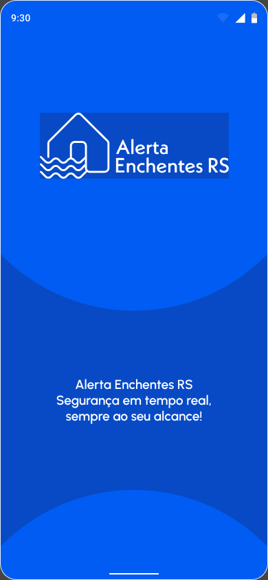
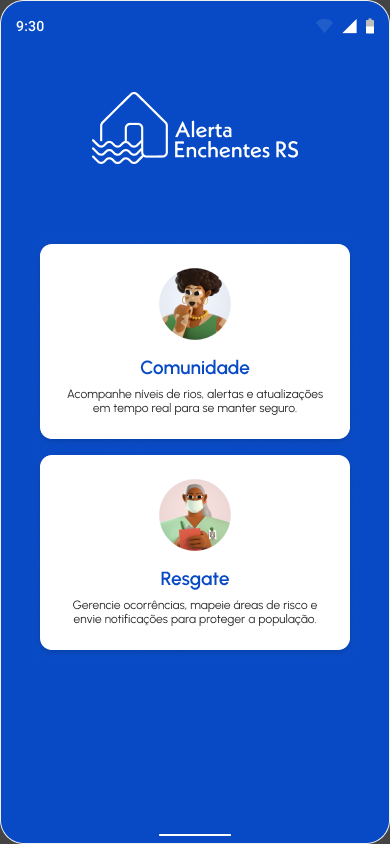
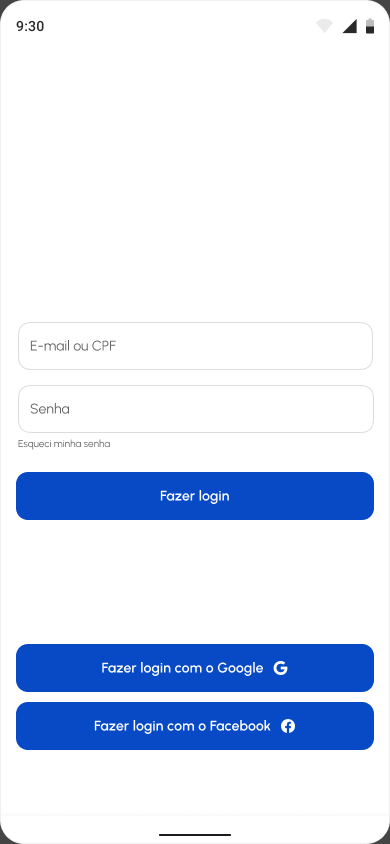
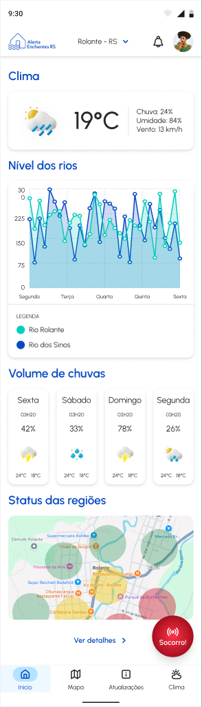
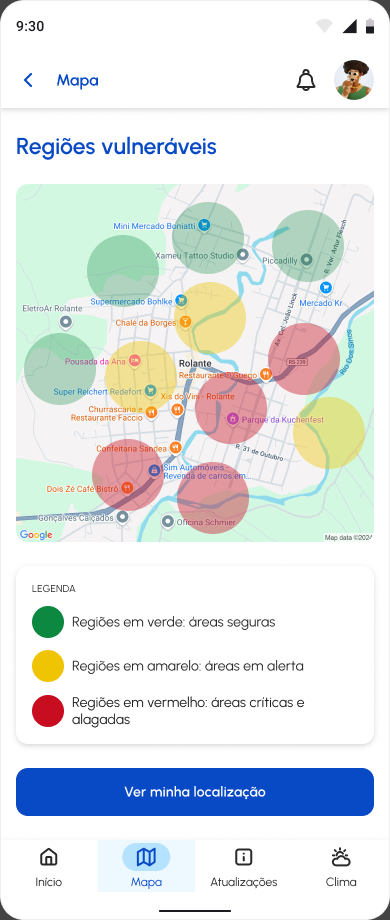
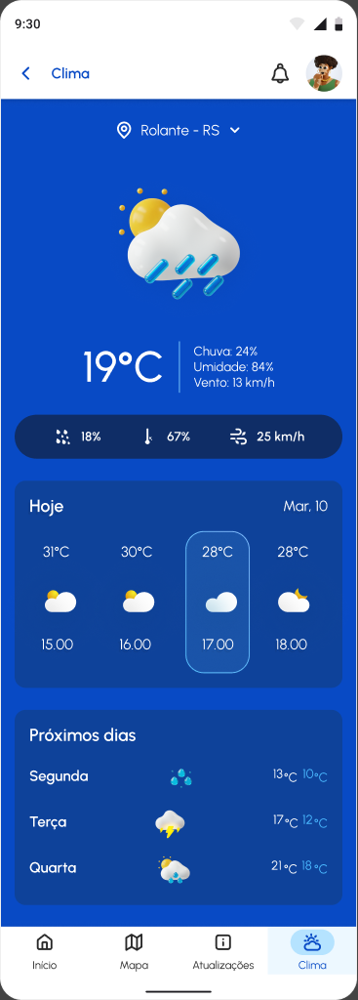
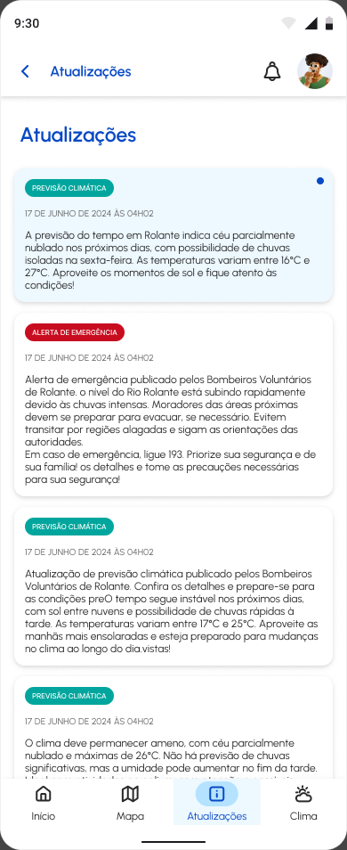
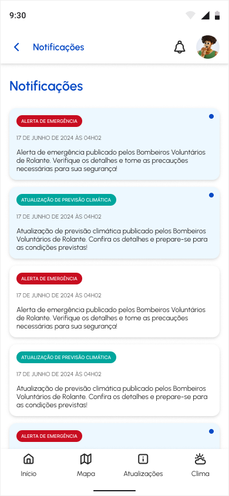

The problem
People who lived through the floods lacked clear guidance. In our survey, 62% had received information on how to act, but only 25% considered the available information sufficient.
A free app concept that helps people in flood-prone areas of Rio Grande do Sul, Brazil, follow river levels and rainfall in real time and reach rescue teams.

Alerta Enchentes RS brings river levels, rainfall, weather forecasts, risk maps and emergency guidance into one place. It serves two groups: residents of at-risk areas, such as Rolante, and the rescue teams that work with them.
I designed it with Gabriela Munhoz in the Design Project III course of my Design degree, after the floods that hit Rio Grande do Sul in April and May 2024. We took it from research to a high-fidelity prototype.
People who lived through the floods lacked clear guidance. In our survey, 62% had received information on how to act, but only 25% considered the available information sufficient.
Improve flood prevention for communities in at-risk areas, with an accessible, simple and reliable tool that helps people plan ahead and act safely.
A visual identity, a style guide, high-fidelity prototypes of both user flows, and promotional materials: an Instagram post and story, a banner and a flyer.
An academic project taken to high-fidelity prototype, with a proposed model to keep the app free for users through local sponsors.









Going digital makes it possible to offer essential information at no cost, which matters in areas with limited resources.
Residents follow alerts and ask for help. Rescue teams manage requests, mark risk areas and publish alerts, so the information comes from people responsible for safety.
Plain language, a green, yellow and red risk map, and an SOS button that sends the person’s name, phone and address to the rescue team after one confirmation.